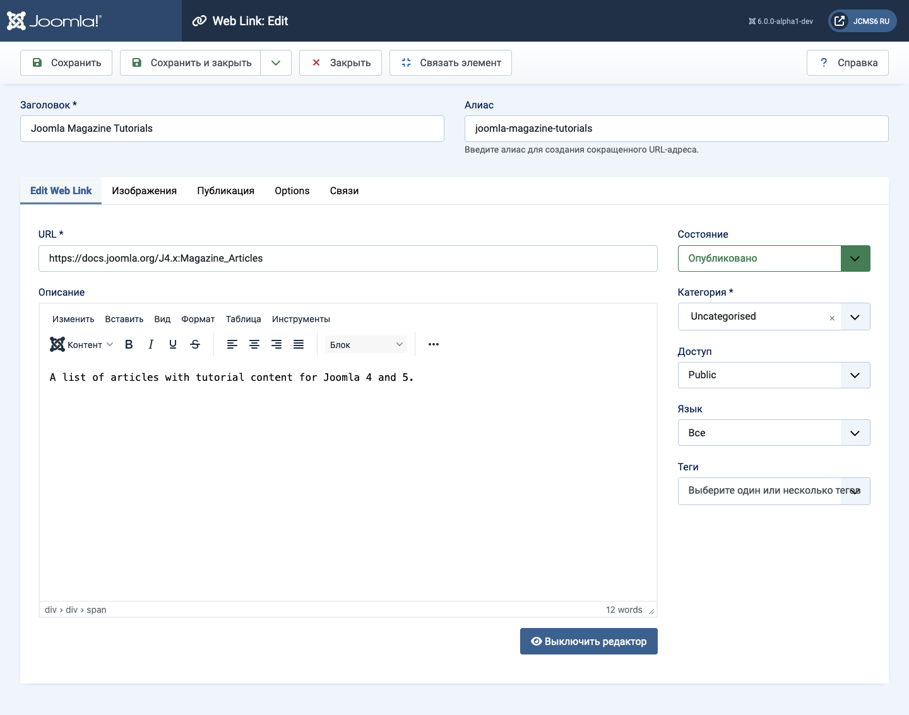
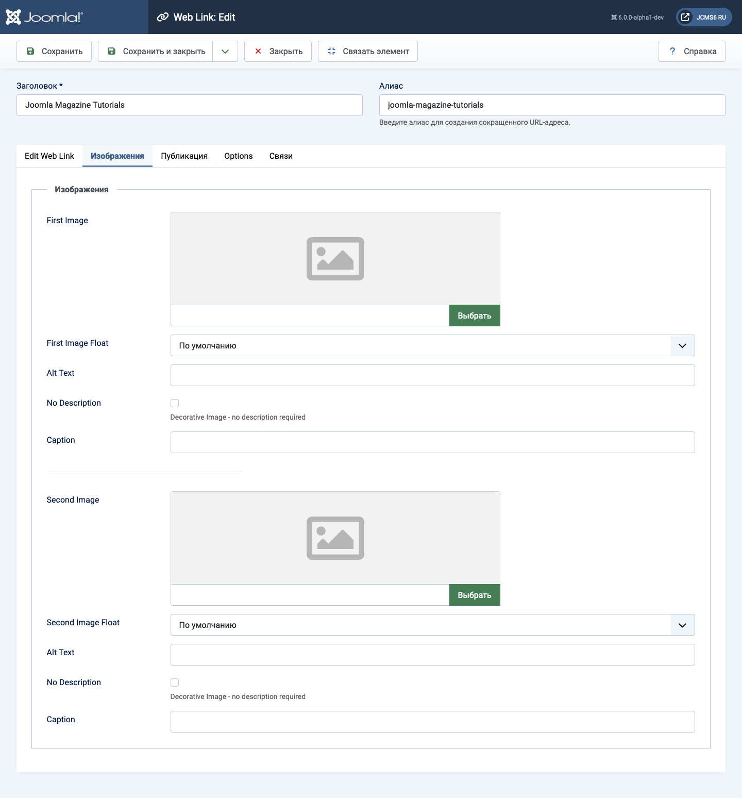
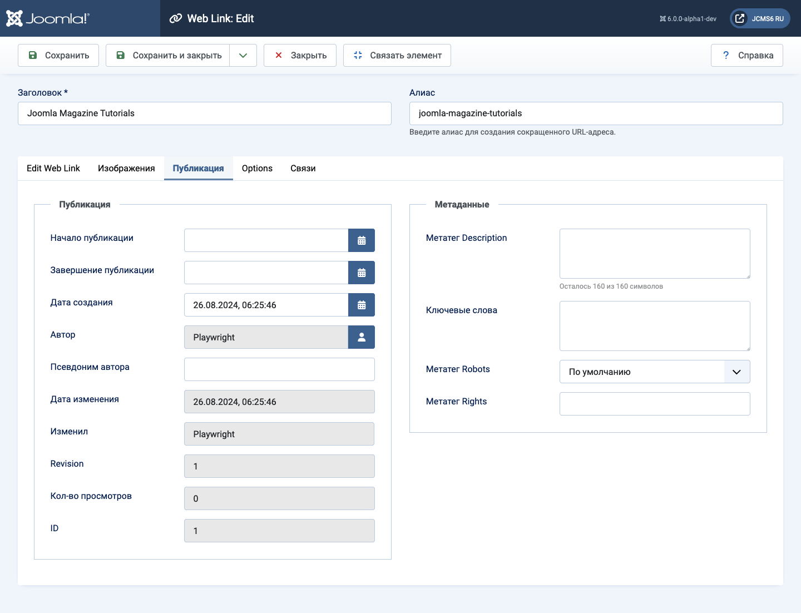
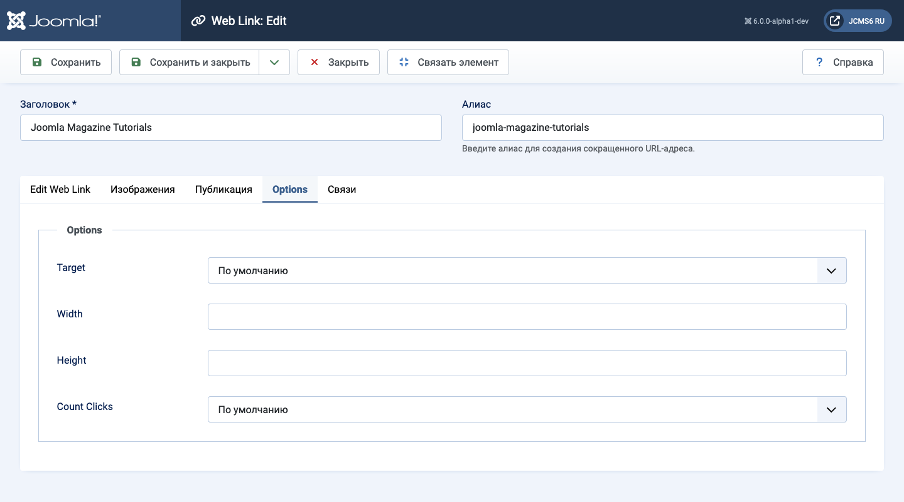

Joomla Help Screens
Веб-ссылка: Редактировать
Описание¶
Эта форма используется для добавления новой веб-ссылки или редактирования существующей ссылки. Обратите внимание, что вам нужно создать как минимум одну категорию веб-ссылок, прежде чем вы сможете создать свою первую веб-ссылку.
Общие элементы¶
Некоторые элементы этой страницы описаны в отдельных статьях справки:
Как получить доступ¶
- Выберите Компоненты → Веб-ссылки → Ссылки в меню администрирования. Затем...
- Нажмите кнопку Создать на панели инструментов, чтобы создать новую ссылку. Или...
- Выберите заголовок в списке ссылок, чтобы отредактировать существующую ссылку.
Скриншот¶

Поля Формы¶
Левый Панель¶
- URL URL веб-ссылки.
- Описание Описание элемента. Описания категорий, подкатегорий и веб-ссылок могут отображаться на веб-страницах, в зависимости от настроек параметров. Эти описания вводятся с использованием того же редактора, который используется для статей.
Вкладка Изображения¶

- Первое изображение Нажмите «Выбрать», чтобы выбрать изображение для отображения с этим элементом на переднем плане.
- Позиция изображения Где разместить изображение относительно текста на странице.
- Альтернативный текст Альтернативный текст для использования для посетителей, у которых нет доступа к изображениям. Этот текст заменяется текстом подписи, если текст подписи доступен.
- Подпись Подпись к изображению.
- Второе изображение Нажмите «Выбрать», чтобы выбрать изображение для отображения с этим элементом на переднем плане.
- Позиция изображения (Использовать глобально/справа/слева/нет). Где разместить изображение относительно текста на странице.
- Альтернативный текст Альтернативный текст для использования для посетителей, у которых нет доступа к изображениям. Этот текст заменяется текстом подписи, если текст подписи доступен.
- Подпись Подпись к изображению.
Вкладка Публикация¶

- Начало публикации Дата и время начала публикации. Используйте это поле, если хотите ввести контент заранее и затем автоматически опубликовать его в будущем.
- Конец публикации Дата и время окончания публикации. Используйте это поле, если хотите, чтобы контент автоматически изменялся на состояние «Неопубликован» в будущем (например, когда он больше не актуален).
- Дата создания По умолчанию это поле заполняется текущим временем, когда была создана статья. Вы можете ввести другую дату и время или нажать на иконку календаря, чтобы найти нужную дату.
- Создал(а) Имя пользователя Joomla!, который создал этот элемент. По умолчанию это будет текущий авторизованный пользователь. Если вы хотите изменить его на другого пользователя, нажмите кнопку «Выбрать пользователя», чтобы выбрать другого пользователя.
- Псевдоним автора Это необязательное поле позволяет ввести псевдоним для этого автора для данной статьи. Это позволяет отображать другое имя автора для этой статьи.
- Дата изменения (Информативно только) Дата последнего изменения.
- Изменил(а) (Информативно только) Имя пользователя, который выполнил последнее изменение.
- Редакция (Информативно только) Количество редакций этого элемента.
- Просмотры Количество раз, сколько элемент был просмотрен.
- ID Это уникальный идентификационный номер для этого элемента, назначаемый автоматически Joomla!. Он используется для внутренней идентификации элемента, и вы не можете изменить этот номер. При создании нового элемента это поле отображает 0 до тех пор, пока вы не сохраните новую запись, после чего ему будет присвоен новый ID.
- Мета-описание Необязательный абзац для использования в качестве описания страницы в HTML-выходных данных. Это обычно отображается в результатах поисковых систем. Если введено, это создает HTML мета-элемент с атрибутом name "description" и атрибутом content, равным введенному тексту.
- Мета-ключевые слова Необязательный ввод для ключевых слов. Должны вводиться через запятую (например, "кошки, собаки, домашние животные") и могут быть введены в верхнем или нижнем регистре. (Например, "КОШКИ" будет сопоставлено с "кошки" или "Кошки").
- Внешняя ссылка Необязательная ссылка для использования для связи с внешними источниками данных. Если введено, это создает HTML мета-элемент с атрибутом name "xreference" и атрибутом content, равным введенному тексту.
-
Роботы Инструкции для веб-роботов при посещении этой страницы:
- Использовать глобально: Использовать значение, указанное в Компонент → Опции для данного компонента.
- Индексировать, следовать: Индексировать эту страницу и следовать ссылкам на этой странице.
- Не индексировать, следовать: Не индексировать эту страницу, но следовать ссылкам на ней. Например, вы можете сделать это для страницы карты сайта, где хотите, чтобы ссылки были проиндексированы, но не хотите, чтобы эта страница отображалась в поисковых системах.
- Индексировать, не следовать: Индексировать эту страницу, но не следовать ни одной ссылке на странице. Например, вы можете сделать это для календаря событий, где хотите, чтобы страница отображалась в поисковых системах, но не хотите индексировать каждое событие.
- Не индексировать, не следовать: Не индексировать эту страницу и не следовать ни одной ссылке на ней.
- Права на контент Опишите, какие права имеют другие пользователи для использования этого контента.
Вкладка Опции¶

-
Цель Как открыть ссылку. Варианты:
- Открыть в родительском окне. Открыть ссылку в текущем окне браузера, позволяя навигацию назад и вперед.
- Открыть в новом окне. Открыть ссылку в новом окне браузера, позволяя навигацию назад и вперед.
- Открыть в всплывающем окне. Открыть ссылку в всплывающем окне.
- Модально. Открыть ссылку в модальном экране.
- Ширина Ширина окна IFrame. Введите число, означающее количество пикселей или процент (%). Например, "550" означает 550 пикселей. "75%" означает 75% ширины страницы.
- Высота Высота окна IFrame. Введите число, означающее количество пикселей или процент (%). Например, "550" означает 550 пикселей. "75%" означает 75% высоты страницы.
- Подсчет кликов Будет ли отслеживаться, сколько раз эта веб-ссылка была открыта.
Переведено OpenAI.